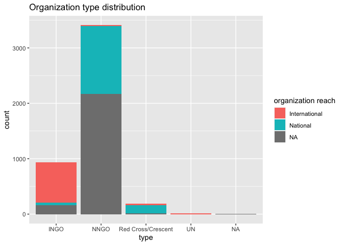
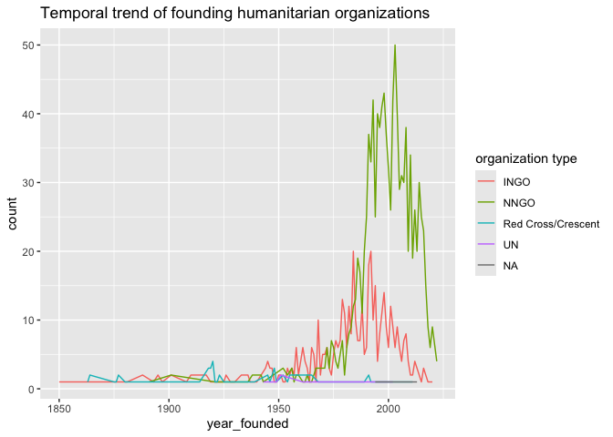

The goal of gdho is to provide a detailed list of global humanitarian organizations complied by Humanitarian Outcomes which contains basic information such as organization website and headquarter location, as well as, operational information such as annual expenditure. The original database is updated annually and this package version uses data retrieved on September 20, 2023.
Installation
You can install the development version of gdho from GitHub with:
# install.packages("devtools")
devtools::install_github("openwashdata/gdho")Alternatively, you can download the individual datasets as CSV or XLSX file from the table below.
| dataset | CSV | XLSX |
|---|---|---|
| gdho_full | Download CSV | Download XLSX |
| gdho | Download CSV | Download XLSX |
Data
The package provides access to 2 datasets gdho and gdho_full. They are essentially the same data where the former is a concise version that removes detailed country columns (200+ columns) about whether this country has the humanitarian organization. Therefore here we only describe the dataset gdho.
All the organisations included the database have responded to humanitarian needs in at least one emergency context, individually or in partnership with other organisations, even if their stated mission is not strictly humanitarian. Not included are NGOs devoted to development, human rights, or political causes, or that do not work in emergency settings.
library(gdho)The gdho data set has 33 variables and 4556 observations.
gdho |>
head() |>
gt::gt() |>
gt::as_raw_html()| id | year | name | abbreviated_name | type | international_or_national | website | hq_location | year_founded | year_closed | countries_of_operation_count | sector | religious_or_secular | religion | red_cross_code_of_conduct_signatory | chs_member | interaction_member | icva_member | staff | staff_imputed | natl | natl_imputed | intl | intl_imputed | percent_intl | ope_approx_usd | ope_imputed | ope/staff | ope_inflation_adjusted | ope_original_currency | humexp_approx_usd | humexp_imputed | humexp_inflation_adjusted |
|---|---|---|---|---|---|---|---|---|---|---|---|---|---|---|---|---|---|---|---|---|---|---|---|---|---|---|---|---|---|---|---|---|
For an overview of the variable names, see the following table.
#> Rows: 67 Columns: 5
#> ── Column specification ────────────────────────────────────────────────────────
#> Delimiter: ","
#> chr (5): directory, file_name, variable_name, variable_type, description
#>
#> ℹ Use `spec()` to retrieve the full column specification for this data.
#> ℹ Specify the column types or set `show_col_types = FALSE` to quiet this message.| variable_name | variable_type | description |
|---|---|---|
| id | integer | A unique Id for each organisation |
| year | integer | Latest year information is available for |
| name | character | Full organisation name |
| abbreviated_name | character | Organisation abbreviation or acronym |
| type | integer | National NGO (NNGO), International NGO (INGO), UN, Red Cross/Crescent classification |
| international_or_national | integer | Organisation’s reach |
| website | character | Organisation page url |
| hq_location | character | Country where HQ office is located |
| year_founded | integer | Year of establishment |
| year_closed | integer | Year closed or last year of visible activity |
| countries_of_operation_count | integer | Number of countries operational in |
| sector | integer | Children/youth, coordination, disabilities, education, environment, food security/agriculture, health, landmines, livelihoods, logistics/communications, nutrition, refugees, shelter, veterinary, water/sanitation, women |
| religious_or_secular | integer | Organisations religious affiliation |
| religion | character | Specific religious affiliation (ex. Catholic, Islamic, Jewish) |
| red_cross_code_of_conduct_signatory | integer | Signatory status of the organisation |
| chs_member | integer | Signatory status to the Core Humanitarian Standard on Quality and Accountability |
| interaction_member | integer | Membership status |
| icva_member | integer | Membership status |
| staff | integer | Actual number of total staff |
| staff_imputed | character | Imputed number of total staff |
| natl | integer | Actual number of national staff |
| natl_imputed | character | Imputed number of national staff |
| intl | integer | Actual number of international staff |
| intl_imputed | character | Imputed number of international staff |
| percent_intl | double | Percent of total staff that are international |
| ope_approx_usd | double | Actual approximate annual operational program expenditure in USD |
| ope_imputed | character | Imputed approximate annual operational program expenditure in USD |
| ope/staff | double | Percent of operational program expenditure per staff member |
| ope_inflation_adjusted | double | Operational program expenditure adjusted for inflation |
| ope_original_currency | character | Actual approximate operational program expenditure in original currency used by organisation |
| humexp_approx_usd | double | Approximate humanitarian expenditure in USD |
| humexp_imputed | character | Imputed approximate humanitarian expenditure in USD |
| humexp_inflation_adjusted | double | Approximate humanitarian expenditure adjusted for inflation |
Example
The humanitarian organizations are categorized into 5 types: INGO (International NGO), NNGO (National NGO), UN (United Nation), Red Cross/Crescent, and NA (Not Available). Most of the organizations fall into the NNGO type. For different types of organizations, how is their organization reach distribute?
ggplot(data = gdho) +
geom_bar(aes(x = type, fill=`international_or_national`)) +
labs(title = "Organization type distribution", fill = "organization reach")
Throughout the years, how do different types of humanitarian organizations increase?
count_by_year <- gdho |>
filter(!is.na(year_founded)) |>
group_by(year_founded, type) |>
summarise(count = n())
#> `summarise()` has grouped output by 'year_founded'. You can override using the
#> `.groups` argument.
ggplot(data = count_by_year) +
geom_line(aes(x = year_founded, y = count, color = type)) +
labs(title = "Temporal trend of founding humanitarian organizations", color = "organization type")
License
Data are available as CC-BY.
Citation
citation("gdho")
#> To cite package 'gdho' in publications use:
#>
#> Zhong M, Stoddard A, Mangono T (2024). _gdho: Global Database of
#> Humanitarian Organizations_. R package version 0.0.1.
#>
#> A BibTeX entry for LaTeX users is
#>
#> @Manual{,
#> title = {gdho: Global Database of Humanitarian Organizations},
#> author = {Mian Zhong and Abby Stoddard and Tichakunda Mangono},
#> year = {2024},
#> note = {R package version 0.0.1},
#> }